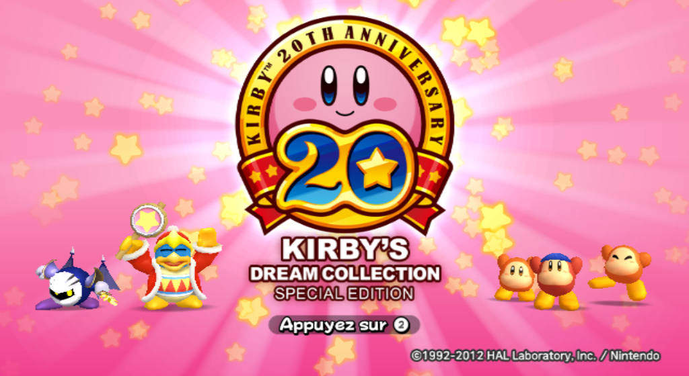
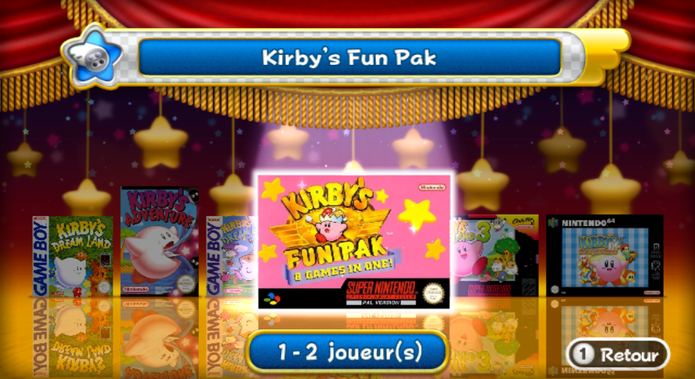
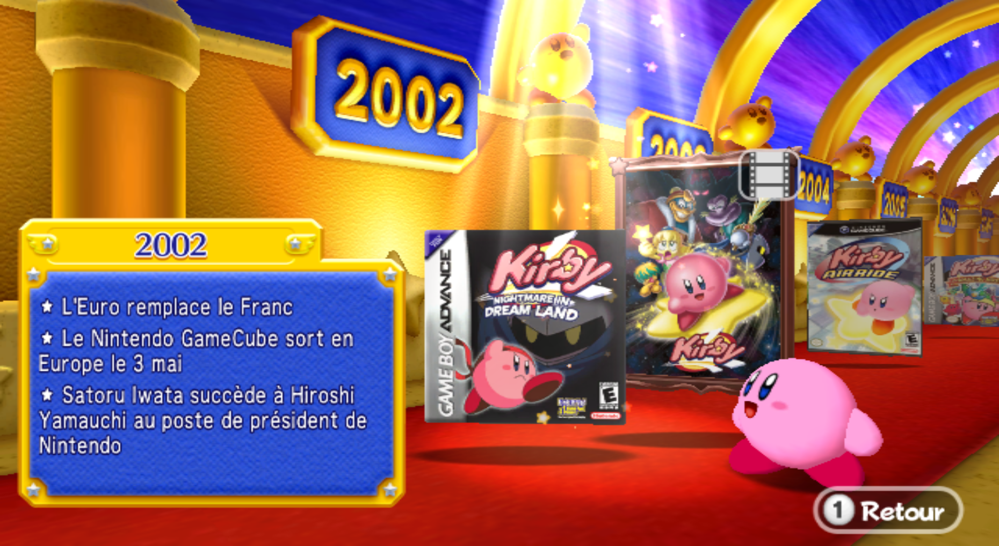
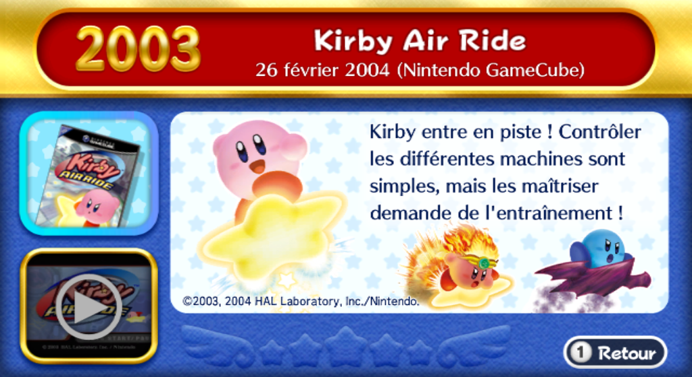
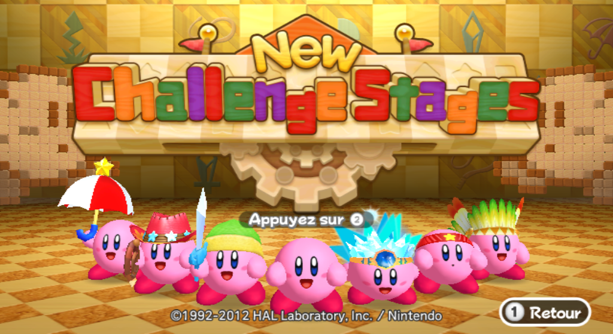
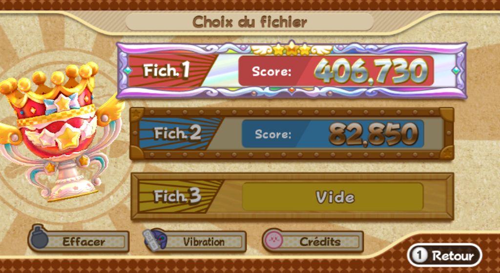
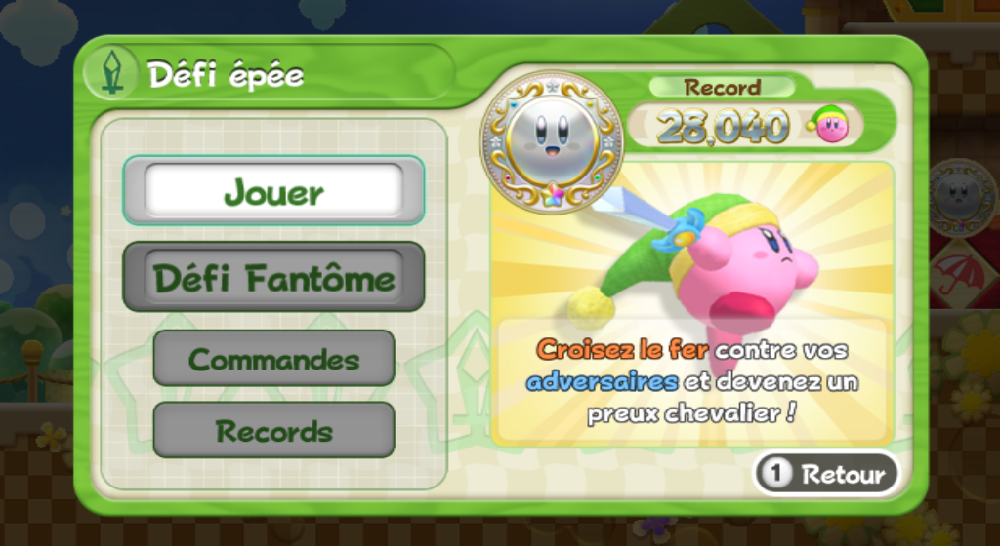
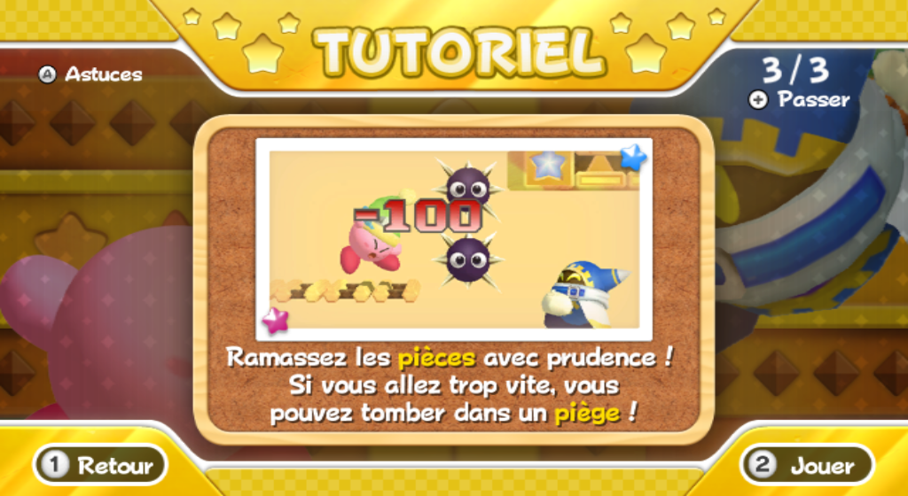
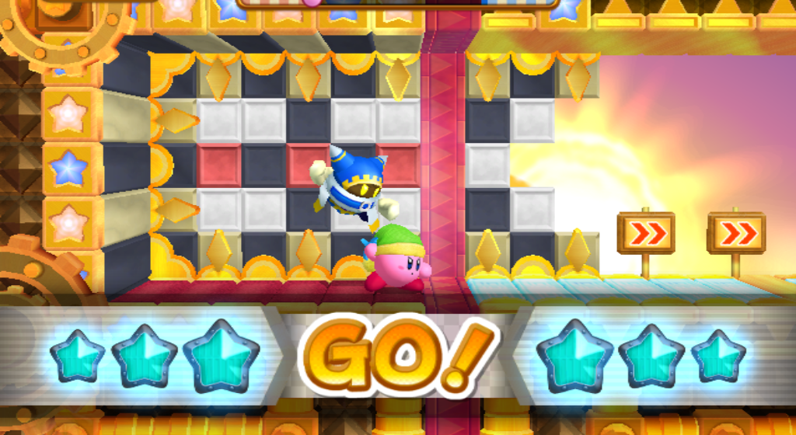

Une traduction française pour Kirby's Dream Collection !
Ce jeu, sorti en 2012 au Japon et aux Etats-Unis pour les 20 ans de Kirby, n'est hélas jamais sorti en Europe, et de ce fait, n'a jamais eu une traduction française. Souhaitant que des personnes connaissent ce magnifique jeu, j'ai décidé en début d'année 2020 de commencer à traduire ce jeu en français en utilisant les différents jeux officielement traduits par Nintendo
Télécharger le patch pour le jeu
Instructions:
- Avant d'utiliser l'outil, assurez-vous d'avoir installé WIT et de posséder légalement une copie en format .WBFS de la version américaine du jeu.
- Téléchargez l'archive et extrayez-la.
- Placez votre copie du jeu à la racine du dossier du programme
- Exécutez le programme Kirby's Dream Collection - Patch FR.bat
- Patientez pendant que le programme implante la traduction
- Une fois fini, votre jeu est prêt à être lancé !
Informations sur le patch:
| Traduit | Non traduit |
|---|---|
|
|
- Le patch a été testé sur une véritable Wii (non testé sur le VWii de la Wii U, mais il devrait fonctionner aussi)
Changelog:
Version 1.1:
-Un nouveau programme a été mis en place afin de faciliter l'insertion des fichiers de traduction.
-Le lien de téléchargement et le tutoriel ont été mis à jour
- Les dates de sortie des jeux sont plus précises
Version 1.0:
- Sortie du patch
Galerie








Contact:
Si vous souhaitez apporter votre aide au projet, vous pouvez envoyer un message privé sur le compte Twitter (lien dans le pied de page).